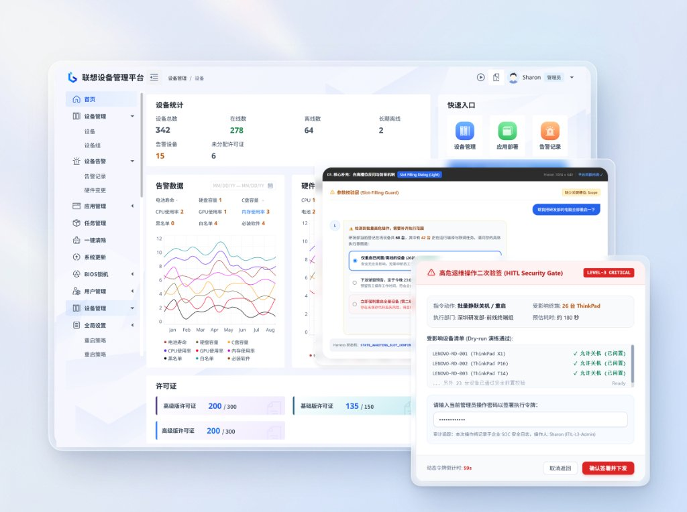

联想设备管理平台与运维 Agent
Agent Harness 架构、三方责任模型与确定性安全护栏
面对 260+ 企业管理海量跨区域 PC/笔记本“排障筛选链路长、批量分发繁琐、高危操作需防误触”的现实挑战，深谙 Agent = Model + Harness 工程范式，构建“AI 意图编排 + 平台确定性鉴权拦截 + HITL 授权”三方责任模型，搭配百条级 Tool Calling 黄金评测集（Eval Pack）。
速览（Executive Summary）

业务背景与痛点破局（Context & Problem）
核心矛盾不是“功能不够多”，而是“功能繁杂导致运维人员认知负荷过载”
改造前：传统多层表单驱动与分散排障
纳管数千台设备时，查询“昨日特定机房有蓝屏告警且内存满载的机器”需要在资产表、告警中心、性能监控三处跳转，配置 4 个复合筛选项。一线 HelpDesk 面对报错截图需人工辨识并手动搜排查单，单任务耗时长。
改造后：AI Copilot 智能编排与严格风控
自然语言一句话复合查询，大模型解析意图并通过 Function Calling 调取底层接口生成表格卡片；支持拖入报错截图 OCR 秒级归因；高危操作（关机/重启）强行弹出二次确认卡片，兼顾敏捷度与生产安全性。
“救火队长” 老李
资深 IT 运维专家 · 管理 3000+ 台终端AI 赋能：“自然语言复合查询 ＋ 批量部署起草”，无需翻找菜单，5 秒圈定机器并预填确认表单。
“新手村长” 小王
一线 HelpDesk 专员 · 处理日常报修单AI 赋能：“报错截图 OCR 诊断”，直接从截图中提取错误码并输出修复建议，一键跳转到对应设备。
Agent Harness 控制平面与三大核心机制（Solution Architecture）
基于 Agent = Model + Harness 工程范式，构建“AI 意图路由 + 平台 Harness 鉴权预检 + HITL 授权”三方闭环
系统端到端执行分层架构图（Runtime Architecture）
从输入安全网关到 Intent Router 分流：4 大确定性工作流管道 ＋ 1 个受控探索沙箱闭环
机制 1 · 意图分级路由与 Schema 槽位补全
设计方案：划分三级意图路由（L1 只读查询、L2 批量部署、L3 高危操作）。引入 Slot-Filling FSM 槽位状态机：当关键参数残缺时，状态机停留在 NEED_INFO 状态，前端弹出单选/下拉结构化 Chips 引导补全，严禁大模型发散自由猜测。
机制 2 · 平台 Harness 状态预检与确定性 RBAC 拦截
设计方案：遵循“凡能用确定性代码约束绝不交由概率模型自由发挥”原则。对高危操作建立前后端双重代码级硬拦截：彻底剥离大模型底层放行权（仅输出 ActionDraftCard）；必须由用户前端手动勾选并输入密码，向网关申请具有防重放的 Approval Token（TTL=60s），微服务凭 Token 物理放行。
机制 3 · 异常状态探针与失败恢复（Fallback & Recovery）
设计方案：建立设备同名歧义反问选项；离线机器前置过滤；接口超时自动重试并支持一键转派工单；同时设计 80 分逃生机制（Fallback to UI）：当模型连续 2 轮未收敛（置信度 < 0.7）或超时，AI 严禁输出 Python 堆栈报错，而是礼貌生成并自动预填【高级筛选面板 URL】，保障运维任务不中断。
AI 架构审阅与重构选型（Workflow vs Agent · 9 大功能矩阵）
从“泛 Agent 盲目堆叠”回归“确定性工作流”：单次调用优先、严格红线对比与受控排障 Agent
Workflow vs Agent 架构选型决策树（三维分水岭）
破除“万物皆 Agent”盲目狂热：基于状态空间、确定性要求与容错成本，将 80% 业务收敛至确定性工作流
设计归因：输入输出高度结构化，无需大模型自主反思。改用 Pydantic 参数抽取直连 SQL，延迟从 3.5s 压至 0.9s，彻底消除虚构数字。
设计归因：前置轻量小模型根据告警类别分流；彻底隔离“故障查询”与“执行重启”边界，杜绝 Badcase B-002（蓝屏误当重启）。
三道防线：① 步数硬顶（Max Steps=5）；② 增量回退（跳闸不报错，保留半成品转工单）；③ 影子测试（双轨跑 2 周无误切流）。
设计归因：大模型只有“起草建议权”，无底层 API 触发权。微服务必须依赖前端人工确认签发的 60s 临时 Token 硬拦截。
平台 9 大 AI 功能架构选型审阅与改法评估表
| AI 功能模块 | 现状架构 | 架构判定 | 改法理由与模式选型依据 | 改动量估计 |
|---|---|---|---|---|
| 1. 设备资产复合查询 | 通用 Agent 编排 (ReAct 循环) | 改降级为 Workflow | 步骤完全固定（抽参数→只读API→表格渲染）。单次 Tool Calling 即可闭环，Agent 循环徒增 2s 延迟且易虚构数字（B-010）。 | 小（0.5 人天） |
| 2. 告警信息检索与聚类 | 通用 Agent 编排 (开放工具调用) | 改降级为 Workflow | 改用【路由 Routing + 链式】，先分类告警领域，再调用只读接口做结构化提炼；避免将“蓝屏查询”误判为“重启操作”（B-002）。 | 小（1 人天） |
| 3. 应用部署任务推送起草 | 对话式 Agent (自由规划与动态追问) | 改换模式 | 步骤高度固定可枚举，改为【链式 Prompt Chaining + 确定性槽位状态机】，由工程代码控制追问，严禁大模型跳步下发。 | 中（2 人天） |
| 4. 高危远程控制指令起草 | Agent 提示词约束 + 尝试自主拦截 | 必须降级为 Workflow | 高危操作（关机/重启）严禁赋予 Agent 自主执行权；必须走【路由 Routing + 强校验工作流】，LLM 仅提取实体，后端网关凭 Approval Token 硬拦截。 | 中（2 人天） |
| 5. 报错截图 OCR 与排障辅助 | 通用多模态 Agent (端到端直接调用) | 改换模式 | 现状易退化为“纯图像描述”（B-008）；改为【链式三段流水线】：专用轻量 OCR 抽取错误码 → 检索知识库 SOP → 关联设备详情。 | 中（2.5 人天） |
| 6. 标准 IT 流程 SOP 问答 | 混用通用运维 Agent (带全量工具定义) | 改降级为 Workflow | 典型的单次 RAG 问答，单次调用即可闭环；剥离全部操作类 API Schema，避免 Attention 稀释与注入风险。 | 极小（0.5 人天） |
| 7. 任务状态追踪与失败归因 | 依赖 Agent 多轮记忆检索历史操作上下文 | 改换模式 | 上下文易丢失（B-004）；改为【编排者—工人 (Orchestrator-Workers)】：工程状态机维护任务 ID 栈，LLM 仅充当工人翻译日志报错堆栈。 | 小（1 人天） |
| 8. 多语种实时运维翻译 | 挂载在主对话 Agent 下作为子意图 | 改降级为 Workflow | 触碰红线（单次调用能解决坚决不编排），属于杀鸡用牛刀；独立出单次轻量小模型过滤器，延迟 < 500ms。 | 极小（0.5 人天） |
| 9. 复杂技术故障多轮深度排查 | 暂缓/不敢做 (原 P3 搁置，担心幻觉与失控) | 改升级为受控 Agent | 步骤真正无法预知（需动态查看日志→探测端口→分析驱动版本），正是 Agent 的核心价值区；需构建带【Max Steps=5、Token 预算上限、只读沙箱】的 ReAct Agent。 | 大（5~7 人天） |
工业级确定性与技术理想主义的关键工程权衡 (Trade-offs)
| 决策维度 | 可选方案对比 | 最终选择 | 产品理由与深度思考 |
|---|---|---|---|
| Agent 架构形态 | 全自主 Auto-Agent vs 人在回路（Human-in-the-loop）Copilot |
人在回路 Copilot | 企业 IT 运维追求 100% 稳定性。误关一台核心终端可能造成巨大业务损失。“AI 起草建议 + 人类最终确认”是唯一工业级可行底线。 |
| 设备状态数据源 | 大模型向量数据库缓存 vs 实时调取底层 API（Grounding） |
实时 API 轮询 | 终端在线状态与硬件温度以秒级变化。静态向量缓存无法保证时效性，必须通过 Function Calling 实时打通后端设备长连接网关。 |
| 高危操作拦截控制 | 仅靠 System Prompt 约束 vs 前后端双重契约 + 一次性 Token |
前后端双重硬拦截 | 大模型非确定性决定了不可依赖 Prompt 充当唯一防线。后端剥离 LLM 放行权，必须依赖用户前端人工点击，才能实现 100% 防御。 |
| 参数缺失处理 | 模型自主推测填补默认值 vs 主动反向追问（Slot filling） |
主动反向追问 | IT 运维场景张冠李戴等于重大生产事故。宁可多交互一轮追问，绝不自作主张。 |
| 异常响应设计 | 抛出原始系统错误堆栈 vs 友好业务解释 + 80分传统 UI 降级 |
业务解释 + 降级入口 | 保证面向不同层级运维人员的可用性，不在对话流中中断任务，给用户留出传统手动操作兜底通路。 |
从 0 到 1 生产级 PRD 与状态机契约（Production PRD & State Machine）
全面融入联想云底座私有化架构、意图路由 JSON Schema、槽位追问状态机与 Approval Token 硬拦截
意图分类路由器的结构化输出规范（JSON Schema 强约束契约）
拒绝大模型自然语言自由发散，前置路由器必须输出符合如下 Schema 的强类型 JSON，直接分流至对应 Workflow：
后端 Approval Token 控制反转时序（一票否决红线落地规范）
解决 Badcase B-001（Prompt 拦截失效导致静默关机）的根本解法：将大模型放行权剥离，建立四步物理级 Token 门禁：
Approval Token 控制反转时序图（HITL 防绕过协议）
剥离大模型放行权：LLM 仅起草 60s 临时审批单，真正调用接口由用户前端持有凭证直连网关验签
Approval Token（生命周期 TTL = 60 秒，防重放）。核心差异点：智能运维 Agent 全生命周期评测体系（PoC → 规模化 → 生产投产）
从 0->1 原型验证摸高，到 1->10 自动化回归门禁，再到 10->N 全链路监控与数据飞轮
PoC 原型验证期：底线摸高与安全筑基
• 梳理高频运维工单，构建包含 A~F 六大类的百条级 Golden Dataset。
• 制定 6 大加权维度，将高危指令二次确认拦截定为 100% 一票否决线。
• 设计三级意图路由与 Schema 槽位反问规则，杜绝信息不全引发误下发。
Dify 原型环境 + 本地 Harness 规则断言 + PM 人工交互盲测校验。
规模化内测期：自动化回归与 A-M-I 治理
• 圈定 20+ 企业 IT 运维团队灰度内测，收集跨机房复杂多条件提问真实日志。
• 推动研发集成 DeepEval 单元测试，将 Golden Cases 固化为 CI/CD 自动化门禁。
• 开展 A-M-I 诊疗：解决多实体粘连、多轮指代丢失、报错截图 OCR 漂移等 P1 级缺陷。
DeepEval (自动阅卷机) + Git CI/CD 流水线 + 自动化批量跑分报告。
生产投产期：全链路监控与数据飞轮
• 纳管 100万+ 终端高并发场景，建立全链路 APM 监控大盘（TTFT、Token 消耗、QPS）。
• 打造生产数据飞轮：运维人员取消任务、点踩、打回工单自动打标沉淀至待审池。
• 每周抽样审查线上 Bad Case，专家修正标注后并入回归用例库，驱动 Prompt 持续进化。
Langfuse / LangSmith 生产级 Trace 监控 + Prometheus 成本报警 + 数据回流管道。
智能运维 Agent 核心评测指标大盘（4 层解耦验收基准）
黄金测试集分布（Benchmark A~F 六大核心场景）
| 失败模式 (Failure Mode) | 严重级别 | 根因剖析（5-Why 因果分析） | 缓解与工程设计 (Mitigation) |
|---|---|---|---|
| 高危跳步静默执行 | P0 致命红线 | 多设备复杂长指令冲淡了 Prompt 拦截权重；若依赖大模型自行决定确认，极易被诱导指令绕过。 | 【架构降级 + 后端物理硬拦截】 彻底剥离大模型放行权，降级为确定性工作流；后端网关强校验前端人工确认签发的单次有效 Approval Token (TTL=60s)，无 Token 物理 403 阻断。 |
| 意图与动作混淆 | P1 严重阻塞 | 故障词“蓝屏”在训练样本中与“重启”强关联，通用 Agent 挂载全量工具导致 Attention 漂移误触发写接口。 | 【前置独立路由 + 接口物理隔离】 引入轻量独立 Intent Router 强约束输出；查询工作流物理剥离任何写操作 API，从根源杜绝“蓝屏查询”误调“重启”。 |
| 多实体粘连错误 | P1 严重阻塞 | “给市场部装个钉钉”中，NER 抽取未能拆解部门与应用，将复合短语识别为单个主机名。 | 【本地 NER 词典 + 槽位状态机 (Slot FSM)】 引入本地组织架构与应用字典前置正则匹配；槽位缺失时状态机进入 NEED_INFO 弹出结构化单选芯片。 |
| 多轮指代丢失 | P1 严重阻塞 | 用户说“撤销上个任务”，会话 Memory 缺少任务栈维护，将指代词当成程序名。 | 【服务端 Session 栈 + 编排者-工人模式】 由后端工程状态机统一维护 Session 级活动任务 ID 栈并作为确定性入参注入，LLM 仅充当工人翻译状态与报错。 |
| 模糊指代直接报错 | P2 体验瑕疵 | 用户说“那台 8G 内存破电脑”，系统未能主动反向 Slot filling 追问，直接报无此设备。 | 【候选实体单选卡片 + 80 分优雅降级】 匹配到多台设备时弹出候选卡片供点选；连续两轮未收敛自动降级带参跳转回【高级筛选面板】，保障操作不卡死。 |
黄金交互用例演示（Golden Conversations）
还原真实运维场景下的结构化返回、高危拦截卡片与多模态排障闭环
| 设备编号 | 使用人 | BIOS | 最新告警 |
|---|---|---|---|
| LNX-8012 | 张伟 (研发一部) | v1.3 | 0x0000003B 蓝屏 |
| LNX-8045 | 李雷 (架构组) | v1.4 | 0x0000001A 蓝屏 |
高危操作 HITL 阻断 ＋ 管理员二级验密
- 目标设备：LNX-9999 (ThinkPad X1 Carbon)
- 当前状态：在线 (IP: 10.20.4.15，当前登录人：王工)
- 影响评估：将导致该终端立即断电关机，未保存的数据可能丢失！
企业落地实施六步法与数据飞轮（Enterprise Rollout Lifecycle）
从业务基线对齐、Evals 先行，到影子双轨运行（Shadow Running）与持续进化飞轮